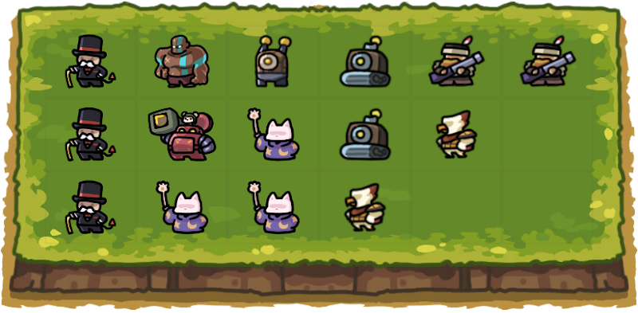
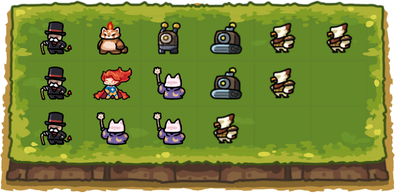

Intro
This is the ultimate normal mode guide. Follow this guide, and you'll be able to carry normal mode even at extremely low levels. This goes through the entire process of clearing normal mode from start to finish. From the opening waves, how to play the mid-game, and how to scale your damage to the very end. It doesn't matter who your partner is. If you follow this guide, you'll be able to carry the team through.
To do this you're going to need these 3 artifacts at level 1 or higher


Stack Stones and Coins
You need to start the match by stacking luck stones and coins from missions. You’ll want to have the artifact item “luck stone” to do this because every mission you complete after you get it will give you a luck stone on top of the normal reward for completing that mission. Your goal is to do Epic Roulette Summon to get one or two epics units on the board so you can easily kill the hunts before wave 10.
The most reliable way to get luck stones fast is to complete these missions:


If you have the Luck Stone artifact you’ll have gained +400 coins and +4 luck stones from those missions. If you merged commons and sold blues, thats an extra +1 or +2 luck stones on top of that. It’s highly recommended to not merge your bandits because they help generate coins, but if you haven't gotten bandits to level 6 yet, they generate 5x less coins and you could probably get away with merging and selling them to do another Epic Roulette Summon.
Once you get an epic, it’ll easily kill your hunts and bosses. 2 killed hunts gives you +4 more luck stones, and killing your hunt before wave 10 gives you +100 coins and another luck stone because of another mission. You’re going to need to save coins for the next part of the strategy anyways, so after completing all those missions you should try to save 1000 coins. This completes another mission, giving you another +50 coins, and another luck stone.
Total Mission Luck Stones/Gold not including bosses and sold
rares:
+550 coins
+6 luck stones
Bosses and Hunts give +8 more.
If you spend all 14
luck stones on Epic Roulette Summon, you’ll average 3 to 4 epics
after. With 2 upgrades to epic damage, they will carry you long
enough to easily do the next parts to win normal mode without
having to spend a single coin on summoning.
Rush getting a DPS
The next step in securing a win is rushing to get a strong DPS mythic. There’s a trick to this that allows you to get the odds of success really high – you need to summon a legendary guardian as fast as possible. There’s a really good reason for this. Legendary units themselves aren’t that strong. However, there are only 4 legendary units in the game, and every single one of them turns into a unit that can either solo, or almost solo normal mode, even if you only have safebox and moneygun 1. If it can’t solo it, you just need to spawn one more legendary unit and get a second mythic guardian.
Once you get a legendary, convert it like this:
- War Machine - Use it to summon Rocket Chu
- Storm Elemental - Lazy Taoist (only much later, see Mythic Unlock Order for Hard)
- Sheriff - Hailey
- Tiger - Master Kun
There is a catch to some of these units though:
Legendary Based Mythics

Rocket Chu
Rocket Chu has an ult that lets you transform him into a way stronger version. But there’s a chance he’ll fail and explode when you try to transform him. His success chance is 35% at level 1, and gets as high as 50% at level 6, so it’s extremely worth the upgrade.
Hailey
Hailey is really strong, but her Star Power ability that makes her strong requires you to spend coins on summoning. You have to be careful not to spend too much coins summoning to upgrade her Star Power or you will ruin your coin economy. Try to postpone summoning to upgrade her Star Power for later waves when she needs the power boost so that you have a bigger coin pool to absorb the impact of summoning.

Master Kun
Master Kun has a similar ability. Instead of upgrading +1 at a time in exchange for coins, he only upgrades when his ult is charged. When you use his ult, it gives him a random upgrade. If you get a weak upgrade, you’re going to have to wait for his ult to recharge. But since you can hold onto more coins, this is an upgrade in damage that’s worth it long term.

Lazy Taoist
The biggest catch is Lazy Taoist. Lazy Taoist is an iconic guardian because he’s very strong. He’s arguably the strongest unit in the game.His attacks are very slow and rely on you having a lot of stun. But his truly unique trait is that he’s extremely weak until he’s level 12, where he’s much stronger, and attacks twice as fast. Before level 12 you’re going to have lackluster results with him, but there’s unfortunately not a better option if you do get storm elemental, so he’s still worth a summon.
For the best results, you’ll want Rocket Chu, Master Kun, and Hailey to all be level 6. Past that, check out the separate guide on mythic unlock/upgrade order.
Lastly, you will get more legendaries doing epic gamble than you will doing legendary gamble. The conversion from luck stone to legendary is actually cheaper doing epic gamble than it is legendary gamble. So not only will epics keep you alive until you get one, but you’ll get legendaries more frequently this way as well.
Getting Stuns
After merging those legendaries, you now have a mythic dps. Hopefully it wasn’t Taoist, and you’re in the clear. (this is why Tao 12 so good, other than the fact he's probably the strongest character in the game at level 12+) Even if it Tao, you need to shift your focus to setting up stuns. This section will be short. The jist of it is, if you stun all the enemies so they’re locked into one place, every attack you perform will hit every single enemy at one time. If you do this, you only need one or two dps mythics to clear normal. If you don’t have enough stun, and they’re just walking in a single file line, you’re only going to be able to hit some of them as they walk past, and you’re just not going to kill them. You could have 5 dps mythics, and you’ll probably still lose. 1 dps with enough stun to lock enemies in place will outdamage 5 dps mythics every time.
All you need to get results like that is 1 stack of purple stun robots and 2 stacks of blue stun robots, and you're set.

Just copy what's happening in the picture above and your runs will instantly become way easier. Unfortunately, this does assume your partner is doing a good amount of stun too. If they aren't, you can try to make up for it by doing this next setup.
(Ignore the part where it says to summon at 95 mobs, that's only for Hell Mode)
Defense Reduce
If you’re using physical damage units, they need defense reduction. Out of the guardians I listed earlier, the physical damage ones are
- Rocket Chu
As you get to the higher waves, enemies start to have more defense. Magic damage isn’t affected by this, but physical damage is partially blocked by defense.
If you have high defense reduction, physical damage actually gets a buff of up to +90% damage, roughly 2x the damage. Here's an example of a 70% damage buff.
At worst, it will reduce your damage to -80% damage, ⅕ of the normal damage.
This means that if you have enough defense reduction you’ll do 10x the damage you’d do without it. Example math: 10 - 80% is 2, 10 + 90% is 19. 19 is just 1 digit shy of 10x more damage.
It tops out around 200 defense reduce, where you don’t gain much past that. This picture will show you how to check how much damage you’re gaining or losing from defense reduction.
You can get more defense reduction mainly by summoning Monopoly Men and Hunters.


The Biggest Damage Buff in the Game
Hands down the biggest damage buff you’ll ever get in the game is through stacking coins with Safe Box, and using those saved coins to boost your damage with Money Gun. Nothing even comes close to this.
We don't have the specific formula on how much damage Money Gun adds to damage yet. However, it becomes very clear once you start getting 100k+ gold, that it increases damage by a massive amount. If we assume the damage is a specifically "0.91% x each gold coins held" It would translate like this -
100k gold x .91% = 910% damage
How can you get 100k gold? Even with safebox 1 you can get a lot of gold. I got 80k on the last game I played on an alt account with Safe Box 1. The idea is - do the missions at the start of the game, get your epics, and then do everything in your power to summon as little as possible for the rest of the game. Need stuns? Do Rare Roulette Summon until you get blue stun robots. Need epics or legendaries? Do Epic Roulette Summon. If you need a common to summon a DPS Mythic, it can be worth summoning to get it, but if it’s early and you can survive off just your epics, wait a little bit so that your coins have time to build more interest. If you don't NEED to spend gold to summon somehting, and you'll stay alive, you shouldn't be spending gold. By the later waves, you should be able to be making 1000-5000 coins per wave just from safebox alone, not including the rest of the coins from killing monsters.
Mythic Damage Upgrade
The last thing you need to buff your damage is also the simplest thing - mythic damage upgrade.
Many mechanics are very difficult to actually measure. Luckily,
this upgrade is the easiest to understand upgrade in the game.
The mythic damage upgrade costs 2 luck stones at the start.
Every time you do it the cost goes up by one luck stone and you
get an extra +50% damage.
The way this is calculated is:
(all your other damage buffs/debuffs) * (1 + .5 * Upgrades)
I'll translate this into easier to read percent bonuses:
- 2 upgrades = +100%
- 4 = +200%
- 8 = +400%
- 16 = +800%
- 31 (max) = +1550%
Or you can read them in the terms of "how much does each upgrade multiply my damage" as well:
- 2 upgrades = 2x damage
- 4 = 3x damage
- 8 = 5x damage
- 16 = 9x damage
- 31 (max) = (almost) 17x damage
Keep this upgrade in mind. Early on, do your epic gambles and get some dps. You don't need these damage bonuses early on. Upgrade mythic damage throughout the game. If at some point you really want to upgrade mythic damage heavily, towards the end when you’re making a ton of money from safe box you can max out your summon chance, spam summon, and sell a bunch of guardians and you can use the luck stones from that to upgrade even further.
Summary
If you use these things, you can carry normal mode even at low levels. The only issue is sometimes it can be difficult to get safe box or money gun. Some players are unlucky with keys at the start. To help with this, I recommend you join the discord. There’s a channel called “first-clear-help” that has players willing to help you through hard mode, and sometimes hell mode, to get your first clear rewards. This will help you not only get more keys to try and get safe box and money gun, but it will also get you mythic stones, helping you level your mythics.
The following boards are sample suggested layouts for normal which have a balance of DPS, stuns and support. If you don't have Mono yet, don't fret. Just move your extra DPS to the front. Stunners stay strictly in the displayed spots. Do not put any stunners in front.
Physical DPS board
Magic DPS board
Bonus: Mythics for Consistent Normal Clears
We have described how to clear normal mode consistently. This is the recommended order to level up mythics to make your normal clears even more consistent and guild towards hard mode clears.
Hailey - Level 6
Hailey is the first mythic to get as she has the highest ATK boost of the mythics from her skills which makes her especially useful when your sb/mg is low since you are not yet able to multiply your ATK to sky high levels yet. She requires a Sheriff (legendary), a Hunter (epic) and a Sandman (rare) to summon.
Her ATK gets boosted by her Star Power passive skill which has a chance to increase Star Power (max 10) each time you summon a unit. Be careful not to destroy your gold economy when increasing her Star Power. It is recommended to postpone upgrading her Star Power as late as possible to give Safe Box more time to grow your existing gold or when you need common guardians for merging other mythics. Due to her ATK boost, she will also be useful for shorter game modes like guild battle and underground cave.
Upgrading her to level 6 doubles the ATK boost from her Star Power passive skill which gives you a lot more leeway to learn how to manage your gold economy to boost the ATK of the rest of your board.
Note: Hailey is a Magical DPS and does not require or benefit from Defense Reduction.
Master Kun - Level 6

Master Kun aka Kun is the second mythic to get. Similarly to Hailey, he has a strong ATK boost from his skills though his comes from his ult, Endure Rage. Endure Rage gives a random ATK boost (indicated by a +1 to +99 with the higher number giving a higher ATK boost). Each time you use Endure Rage, the number will be randomly chosen between 1 to 99. So you can have your ATK boost decrease if you’re unlucky on subsequent uses of Endure Rage. He requires a Tiger Master (legendary), an Eagle (epic) and a Paladin (rare) to summon.Due to his ATK boost, Kun is useful for shorter game modes like guild battle and underground cave.
At level 6, Kun unlocks a passive ult which generates more spinning flames based on his stacks of Endure Rage (additional flame every 30 stacks) which increases his damage output significantly.
Kun’s primary shortcoming is that his damage output will fail to keep up with other mythics who benefit fully from sb/mg ATK boosting. Because a big part of his damage comes from his ult’s ATK boost which doesn’t interact with sb/mg, he will start being ineffective from Hard wave 50 onwards and equally Hell wave 50 onwards. Hailey has this issue to a much less extent since her ATK boost is much higher and she has an immortal form to upgrade to.
Note: Kun is a Magical DPS and does not require or benefit from Defense Reduction.
Rocket Chu - Level 6

Rocket Chu aka Chu is the third mythic to get. Chu has an Overclock ability to become the stronger version. When people talk about using Chu, it is always referring to the Overclocked version. At level 1, the Overclock success rate is 35%. At level 6, this increases to 50% which greatly increases the consistency of Chu. Chu requires a War Machine (legendary), a Shock Robot (rare) and a Thrower (common) to summon.
Timing when to use Overclock can be tricky. If you fail, Chu explodes but deals a ton of damage to enemies within range. Hence, it is recommended to Overclock Chu during boss waves in the first half of the game (ie. W40 and earlier) to help take out the bosses even in the case of failure. Past W40, just Overclock Chu as fast as possible since the explosion damage will be less significant on bosses. There isn’t a point to keep Chu non-Overclocked as it is a lot weaker.
Chu stays useful throughout the game as a strong wave clear mythic and the best mythic for War Machine.
Note: Chu is a Physical DPS and requires Defense Reduction.